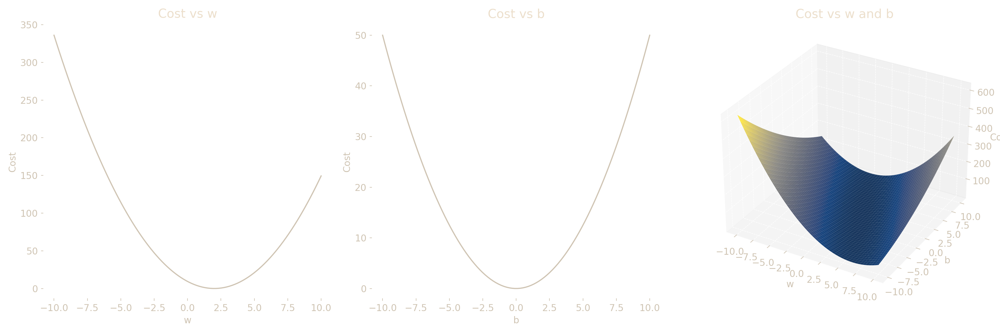
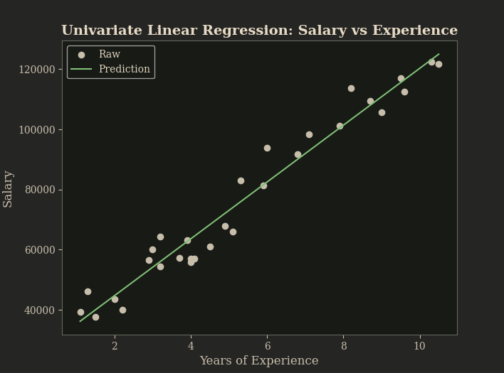
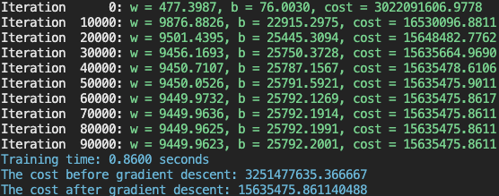

Abstract
The black box LLMs—widely used yet poorly understood—underscore the necessity of understanding the core mechanisms that underpin their behavior and their astute capabilities of next token prediction. The scrupulous analysis of univariate linear regression--which acts as a sort of rite of passage into the world of AI--implemented from first principles accompanied with rigorous documentation of the procedure and theory perhaps may help elucidate how these models, which scale up to incomprehensible sizes with billions of parameters, behave at a fundamental level. An example of salary versus experience was selected as the use case for this model born out of Python and enriched by a publicly available dataset on Kaggle. The training was conducted via the utilization of gradient descent accompanied by a mean squared error cost function, a learning rate of 1e-3, and 100,000 iterations. Convergence was achieved upon the selection of the aforementioned gradient descent parameters whilst giving insight into how such a model works.
Introduction
The advent of artificial intelligence in the 21st century has made it essential that practitioners and thinkers alike understand the foundations of machine learning. This resurgence in interpretability has led me to explore AI and machine learning from a different lens which most contemporaries in the field seldom wear. Initiating from the simplest of models and extending this form of scrupulous analysis to modern day black boxes may help align these models in such a way that is conducive to human flourishing. Among the simplest and most instructive models in this regard is linear regression— specifically, its univariate form.
This project explores the relationship between an employee's years of experience and their estimated salary using a univariate linear regression model. A publicly available dataset was used, and the model was implemented in Python using NumPy. Although convenient, relying on high-level libraries was disregarded and the algorithm was constructed from first principles, including the cost function and gradient descent optimization process. These steps were followed in order to ensure a more robust understanding of the underlying mechanics that govern even the simplest of predictive models.
Dataset Description
The dataset used in this technical report was sourced from Kaggle, titled “Salary Prediction Data - Simple linear regression” by Krishna Raj. Designed specifically for introductory regression tasks, it serves as an ideal foundation for developing and testing a univariate linear regression model.
The dataset comprises of 30 examples with a single feature and a single target being years of experience and salary earned respectively. Both the feature and the target variables being continuous variables.
No preprocessing was required, as the dataset was already clean and well-structured, that is, it contained no missing values, both the features and targets were numeric and appropriately scaled, and the data was compact and tidy.
Methodology
Model Definition :
Since the focus is on a univariate linear regression—where experience is the feature and salary is the target— the model is defined as,
\[ f\left(x^{(i)}\right) = w x^{(i)} + b, \quad i = 1, 2, \dots, m \]
where w and b are the model parameters which can be manipulated, $x^{(i)}$ is the value of the feature of the i'th training example and $f(x^{(i)})$ is the prediction made by the model of the target (salary) for the i'th training example. Here m is the total number of examples within the dataset.
Cost Function Definition :
As the desired output is to discern a model that is adept at explaining the dataset we first need to compute the model's error. To achieve this we use a function called the Cost Function which is of the following form.
\[ J(w,b) = \frac{1}{2m} \sum_{i=1}^{m} \left( wx^{(i)} + b - y^{(i)}) \right)^2 \]
Here we compute the squared difference between the prediction $f(x^{(i)})$ and the target $y^{(i)}$ and divide it by 2m where m is the total number of training examples. The squared term penalizes larger errors and the division by m averages the cost making it independent of the number of training examples. This converts the total squared error into an average squared error, which makes comparing between datasets more convenient. The inclusion of a 2 within the denominator will see its importance once the gradient descent algorithm is implemented.
Purpose of Cost Function:
As we've now achieved a method to evaluate the deviation of our model with regard to the dataset, we now require a process which reduces this deviation. Such an effect is ensured by the process of gradient descent.
Gradient Descent Introduction :
The parameters of the model are its weight and bias and thus by adjusting these the nature of the model can be altered. Since we are already well equipped with a methodology to measure the deviation of the model we minimize the cost—the deviation—by adjusting the model parameters. The cost function is a function of two variables and hence we need to minimize it with respect to both these variables. From calculus, the partial derivative of a function with respect to one of its variables describes the rate of change of the function accordingly as well as the gradient of that function in the same regard. We implement gradient descent as follows.
Update Rule for w :
First let us observe how the weight needs to be adjusted to minimize the cost
\[ w := w - \alpha \frac{\partial J(w,b)}{\partial w} \]
In each step of gradient descent, the parameter is updated by subtracting the learning rate times the gradient of the cost function. What this implementation ensures is that if the preexisting weight parameter of the model is one that results in a higher cost than the minimum value, it reduces that value for the weight which results in an overall reduction of the cost. If the cost function is plotted against w, it can be seen that when the gradient of the function is positive w needs to be reduced and when the gradient is negative, w needs to be increased. The negative sign in the gradient descent step ensures this.
The learning rate $\alpha$ plays a crucial role. It dictates by how much the value of w is altered. For lower values of $\alpha$, the change is small but for larger values of $\alpha$ the change is also large. The selection of an apt value for $\alpha$ (the learning rate) requires a bit of experimentation and it should be noted that a larger value may lead to gradient descent overshooting and diverging from the local—in our case, global—minima whereas a smaller value for the learning rate would result in more time taken to reach the local minima.
The above graphs illustrate the cost function’s behavior with respect to the weight and bias, as well as their combined effect in a 3D surface plot. The convexity of the cost function can be understood based on its parabolic profiles and its bowl-shaped surface with regard to w, b and their combined effect. This property ensures that gradient descent converges reliably to the global minimum despite the starting point. (Note that the above cost function is not descriptive of the data concerned in this report.)
The squared difference between the model prediction and the target is the basis of the cost function and hence when considered with respect to w, the cost function exhibits a parabolic structure resulting in a convex function. When the cost function is expressed as a function of both w and b, it resembles a bowl-shaped surface in the cost space unlike non-convex surfaces which may contain multiple minima. Convexity ensures that any local minimum is a global minimum, making gradient descent both effective and reliable for optimization in this context. This property is especially beneficial in our case guaranteeing that gradient descent will converge to the global minimum, regardless of initial parameter values.
The same is true for the model parameter b and the implementation of gradient descent is identical.
\[ \frac {\partial J(w,b)} {\partial w} = \frac {1}{m} \sum_{i=1}^{m} \left(f(x^{(i)}) - y^{(i)} )x{(i)}\right) \] \[ \frac {\partial J(w,b)} {\partial b} = \frac {1}{m} \sum_{i=1}^{m} \left(f(x^{(i)}) - y^{(i)} )\right) \]
The partial derivatives of the cost function with respect to each parameter are given above. The inclusion of a 2 within the cost function resulted in the above expressions for the partial derivatives of the cost function. It cancels out with the 2 present in the numerator of the derivative resulting in a cleaner function devoid of extra constants increasing clutter.
Convergence and Training :
Gradient descent is run until the cost function reaches convergence and so the model may provide an optimal fit to the dataset under the defined cost metric. Gradient descent, in my implementation, ran over 100,000 iterations and the learning rate was set to 1e-3. These parameters were selected after experimenting with differing learning rates and iteration counts and hence yielded results devoid of divergence or oscillation around the minimum, that is, this configuration achieved stable convergence.
After the training is complete, the training data are used to assess the accuracy of the model’s prediction capabilities and the scatter plot for the dataset and the linear function of the model are plotted to verify this.
Empirical Findings and Interpretation
The above graph displays the original dataset alongside the model’s linear fit, illustrating the apparent linear relationship between experience and salary.
Both graphical and terminal outputs were used in order to assess model performance. The plot depicts the model $y = wx +b$ overlaid on the dataset’s scatter points affirming a close fit. The proximity of the linear function to the observed values suggests strong explanatory capabilities.
The terminal log tracked key values at every 1/10th of the training process: the cost, weight, and bias. Furthermore, the total time taken to train the model and the cost before and after the training run were displayed as well.
| Initial Cost | : | 3,251,477,635.366667 |
| Final Cost | : | 15,635,475.861140488 |
| Training Time | : | 0.8600s |
| Final w | : | 9449.9623 |
| Final b | : | 25792.2001 |
The substantial drop in cost—from the order of 1e+9 to 1e+6—reflects a successful convergence.
Terminal output showing parameter updates and final training statistics.
Discussion
Given the apparent linear correlation between experience and salary, a univariate linear regression model was deemed both sufficient and illustrative. Upon making the selection the model was then adjusted accordingly to fit the dataset. A clean dataset, a descriptive cost function, and the implementation of gradient descent formed a harmonious triumvirate that enabled effective model training. Although there are more variables at play which lends to how much an individual is expected to make, opting to design a linear regression model for this exact use case seemed appropriate.
The first principles approach used in this implementation helped understand the inner workings of a univariate linear regression and paves the way for future abstracting away of these functions. The intention being the demystification of the inner workings that underlines predictive intelligence—even in its simpler linear form. Both the cost function and gradient descent implementations were selected as mentioned earlier in the report due to their prowess at describing and training a univariate linear regression model. Although there were instances the code could have been made more concise by relying on an external library, the decision was made to opt for a first principle approach. This helps elucidate how intelligence—albeit a simpler version of it—could arise from basic logic and mathematics.
It should be duly noted that although the relationship between salary and experience exhibits a linear relationship, it may not always be the case and other variables may contribute to the overall result. Hence this model should be scaled to a multiple linear regression model which captures as many variables as possible to give a solid description of real world data. Furthermore, the miniature nature of the dataset used might result in an overfitting of the model to the dataset and may not be reflective of the real world data. A larger dataset would help avoid this inconvenience.
The insights were shaped through study, experimentation, and dialogue with an LLM assistant—ironically the very phenomenon this project seeks to comprehend. However, the final structure, logic, and analytical framing remain my own.
Conclusion
The intent of this seemingly pedantic but inherently insightful venture was to understand the inner workings of artificial intelligence through the lens of univariate linear regression. The construction and implementation of the model was carried out using Python in order to predict employee salary based on years of experience. A first-principles approach was adopted, constructing both the cost function and gradient descent algorithm without abstraction. Although a z-score normalizer was implemented, it was omitted since the single feature was already well scaled and applying it would have hindered interpretability. Hence the objective, as is apparent, was to explore the implementation of a univariate linear regression model and apply it in an appropriate example, that is salary v experience in our case.
The implementation consisted of three phases: acquiring the dataset, defining a cost function and implementing gradient descent. The mean squared error was chosen as the cost function due to its effectiveness in quantifying deviation in linear models. The selected learning rate and iteration count led to stable convergence, as evidenced by the final cost and predictive fit. Graphical and terminal outputs were used to monitor key statistics such as, the cost and model parameter values every tenth of the total iterations, the cost before and after training and the time taken for convergence or rather to conclude gradient descent.
The model’s final outputs confirmed that the chosen learning rate and iteration count ensured smooth convergence. The linearity of the dataset was described by the model and hence is adept at making predictions with considerably high accuracy. This elucidates the fact that intelligence—although not comparable in our case to its biological counterpart—could emerge through basic mathematics and logic. This highlights the necessity of demystifying the age old conundrum of the definition of intelligence.
This model was applied in a field where more than one variable is at play. This implementation disregarded the importance of other factors such as the age of the employee, their qualifications, prior rejections, and other relevant factors. Furthermore, the dataset used comprised of only 30 training examples and may have caused the model to overfit the sample, limiting generalizability. A first principles approach, insightful though it may be, works antithetical to efficiency and hence the use of some high level libraries would have accelerated the workflow.
Following the Ariadne’s string within the labyrinth of intelligence we discover that from raw data to predictive clarity, the emergent properties of even the simplest forms of intelligence are not sorcery, but method—shaped by reason, refinement, and a refusal to blindly abstract.
References
[1] Salary Prediction Data – Simple Linear Regression, Krishna Raj, Kaggle dataset. https://www.kaggle.com/datasets/krishnaraj30/salary-prediction-data-simple-linear-regression
[2] Ng, A. (n.d.). Machine Learning Specialization. Coursera. https://www.coursera.org/specializations/machine-learning-introduction
[3] Python Software Foundation. Python Language Reference. https://www.python.org
[4] NumPy Developers. (n.d.). NumPy v1.26 Manual. https://numpy.org/doc/
[5] Chandrawansa, M. (2025). Univariate Linear Regression from First Principles [Source code]. GitHub. https://github.com/miniduofficial/univariate-linear-regression